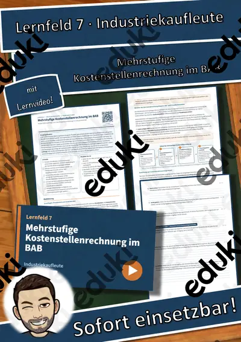
LF 7 Industriekaufleute: Mehrstufige Kostenstellenrechnung im BAB – Übungen, Lösungen + Lernvideo

LF 11 Kaufleute für Büromanagement: Ablaufdiagramme und Schnittstellen – Übungen, Lösungen + Lernvideo

LF 13 Bankkaufleute: Kreditwürdigkeit von Firmenkunden: Rating und Kennzahlen – Übungen, Lösungen + Lernvideo
LF 5 Bankkaufleute: Vorvertragliche Pflichten & Widerruf bei Krediten – Übungen, Lösungen + Lernvideo
LF 4 Industriekaufleute: Anschaffungskosten, Abschreibung und Inventur – Übungen, Lösungen + Lernvideo
LF 12 Bankkaufleute: Das Drei-Schichten-Modell der Altersvorsorge – Übungen, Lösungen + Lernvideo
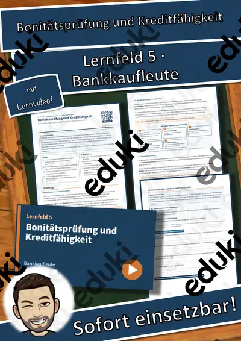
Lernfeld 5 Bankkaufleute: Bonitätsprüfung und Kreditfähigkeit – Einführung, Übungen, Lösungen + Lernvideo
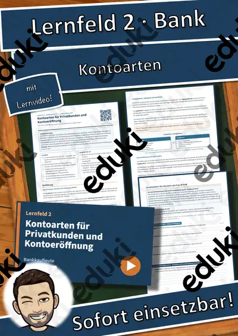
LF 2 Bankkaufleute: Kontoarten für Privatkunden und Kontoeröffnung – Übungen, Lösungen + Lernvideo

LF 2 Industriekaufleute: Kundenauftrag: Von der Anfrage zum Kaufvertrag – Übungen, Lösungen + Lernvideo
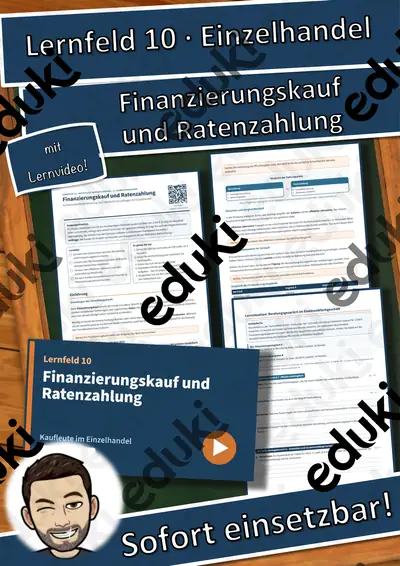
LF 10 Kaufleute im Einzelhandel: Finanzierungskauf und Ratenzahlung – Übungen, Lösungen + Lernvideo
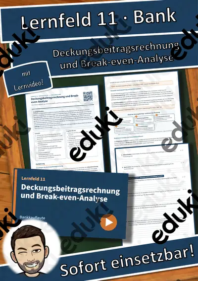
LF 11 Bankkaufleute: Deckungsbeitragsrechnung und Break-even-Analyse – Übungen, Lösungen + Lernvideo
LF 4 Bankkaufleute: Verzinsung von Sparanlagen und Abgeltungsteuer – Übungen, Lösungen + Lernvideo
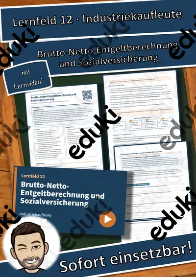
LF 12 Industriekaufleute: Brutto-Netto-Entgeltberechnung und Sozialversicherung – Übungen, Lösungen + Lernvideo
LF 3 Industriekaufleute: Beschaffungsplanung: Bestellpunkt- und Bestellrhythmusverfahren – Übungen, Lösungen + Lernvideo
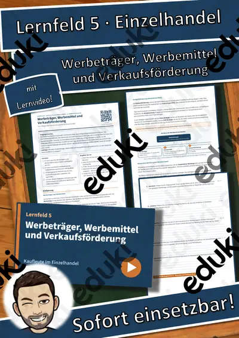
LF 5 Kaufleute im Einzelhandel: Werbeträger, Werbemittel und Verkaufsförderung – Übungen, Lösungen + Lernvideo
Lernfeld 2 Bankkaufleute: Zahlungsinstrumente im Zahlungsverkehr – Einführung, Übungen, Lösungen + Lernvideo

LF 7 Industriekaufleute: Deckungsbeitragsrechnung und Preisuntergrenzen – Übungen, Lösungen + Lernvideo
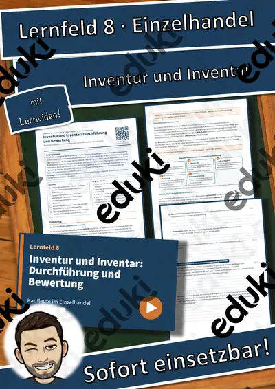
LF 8 Kaufleute im Einzelhandel: Inventur und Inventar: Durchführung und Bewertung – Übungen, Lösungen + Lernvideo
LF 7 Bankkaufleute: Buchungssätze und Verbuchung im Grund- und Hauptbuch – Übungen, Lösungen + Lernvideo
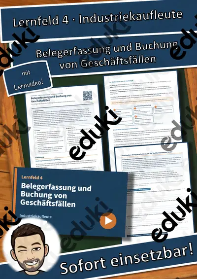
LF 4 Industriekaufleute: Belegerfassung und Buchung von Geschäftsfällen – Übungen, Lösungen + Lernvideo

LF 1 Kaufleute im Einzelhandel: Betriebsorganisation im Einzelhandel – Übungen, Lösungen + Lernvideo
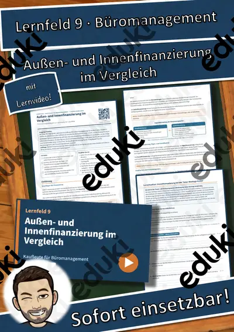
LF 9 Kaufleute für Büromanagement: Außen- und Innenfinanzierung im Vergleich – Übungen, Lösungen + Lernvideo
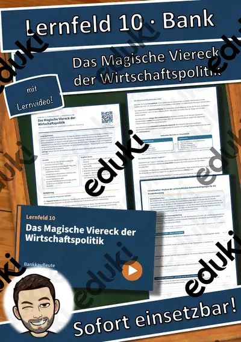
LF 10 Bankkaufleute: Das Magische Viereck der Wirtschaftspolitik – Übungen, Lösungen + Lernvideo
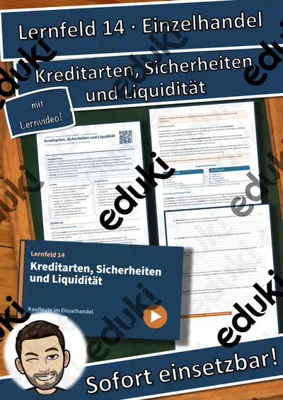
LF 14 Kaufleute im Einzelhandel: Kreditarten, Sicherheiten und Liquidität – Übungen, Lösungen + Lernvideo
LF 13 Kaufleute für Büromanagement: Projektstrukturplan und Zeitplanung nach Meilensteinen – Übungen, Lösungen + Lernvid
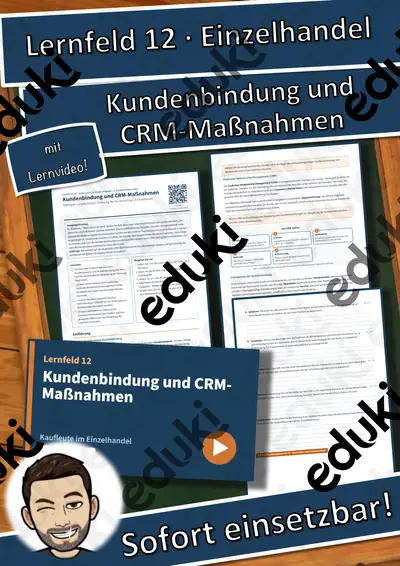
LF 12 Kaufleute im Einzelhandel: Kundenbindung und CRM-Maßnahmen – Übungen, Lösungen + Lernvideo
LF 4 Kaufleute im Einzelhandel: Warenpräsentation und Laufwege: Kunden begeistern – Übungen, Lösungen + Lernvideo
LF 13 Verkäufer/-in: Bewerberauswahl und Einstellungsverfahren – Übungen, Lösungen + Lernvideo
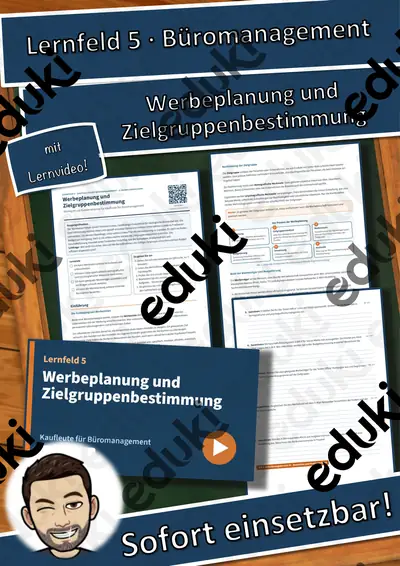
LF 5 Kaufleute für Büromanagement: Werbeplanung und Zielgruppenbestimmung – Übungen, Lösungen + Lernvideo
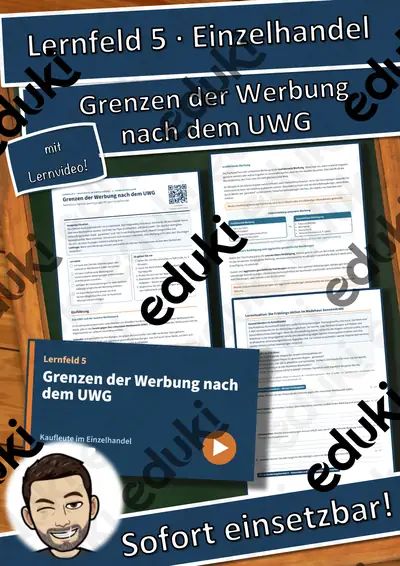
LF 5 Kaufleute im Einzelhandel: Grenzen der Werbung nach dem UWG – Übungen, Lösungen + Lernvideo
Keine Materialien gefunden – versuch einen anderen Suchbegriff oder Filter.
Lernfeld statt Klassenstufe
Berufsschulen arbeiten nach Lernfeldern, nicht nach Jahrgängen. Entsprechend sind die Materialien dieser Seite nach Ausbildungsberuf und Lernfeld sortiert: Jede Einheit nennt Beruf und Lernfeld im Titel und bearbeitet eine handlungsorientierte Aufgabenstellung mit Fachtext, Aufgaben und Lösung. Eine Klassenstufe gibt es hier nicht, deshalb fehlt der Klassenfilter.
Einzelhandel und Verkauf
Für Kaufleute im Einzelhandel und Verkäufer gibt es unter anderem „Betriebsorganisation im Einzelhandel“, „Werbeträger, Werbemittel und Verkaufsförderung“, „Grenzen der Werbung nach dem UWG“, „Inventur und Inventar“ und „Marketing-Mix im Einzelhandel anwenden“. Auch Personalthemen wie „Arbeitsverträge: Befristung, Kündigung und Beendigung“ sind enthalten.
Bank, Industrie und Büro
Für Bankkaufleute stehen „Zahlungsinstrumente im Zahlungsverkehr“, „Buchungssätze und Verbuchung im Grund- und Hauptbuch“ und „Das Magische Viereck der Wirtschaftspolitik“ bereit. Industriekaufleute finden „Belegerfassung und Buchung von Geschäftsfällen“ sowie „Deckungsbeitragsrechnung und Preisuntergrenzen“. Für Kaufleute für Büromanagement gibt es „Außen- und Innenfinanzierung im Vergleich“ und „Auftragsbearbeitung im Prozess“.
Buchführung und Wortspiel
Daneben liegen einzelne Arbeitsblätter zu „Bestandskonten“, „Eröffnungsbilanzkonto“ und „Erfolgskonten“, die auch in allgemeinbildenden Schulen mit wirtschaftlichem Schwerpunkt Verwendung finden. Zum Auflockern gibt es ein Wortspiel nach dem Muster „Sag es nicht!“.
Für wen die Seite gedacht ist
Für Lehrkräfte, die Lernfeldunterricht planen und Unterlagen suchen, die sich in eine Lernsituation einfügen. Vor dem Einsatz lohnt ein kurzer Blick in die Beschreibung, damit Beruf und Lernfeld zur eigenen Klasse passen.
Aufbau einer Einheit
Jede Einheit beginnt mit einer Handlungssituation aus dem Betrieb, es folgen Informationstexte, Aufgaben mit steigendem Anspruch und eine Musterlösung. So lässt sich dasselbe Material in Klassen mit unterschiedlichen Vorkenntnissen nutzen, vom Auszubildenden im ersten Jahr bis zur Prüfungsvorbereitung.
Häufige Fragen
Warum gibt es keine Klassenfilter?
Berufsschulmaterial ist nach Beruf und Lernfeld geordnet. Nutze stattdessen die Suche nach dem Ausbildungsberuf.
Sind die Materialien an den Rahmenlehrplan angelehnt?
Sie orientieren sich an den Lernfeldern. Welche Bundesland-Variante gilt, entscheidest du bei der Auswahl.
Gibt es Lösungen?
Ja, jedes Material bringt eine Musterlösung mit.
Kann ich auch einzelne Aufgaben herausnehmen?
Ja, die Einheiten lassen sich als Ganzes oder in Teilen verwenden.